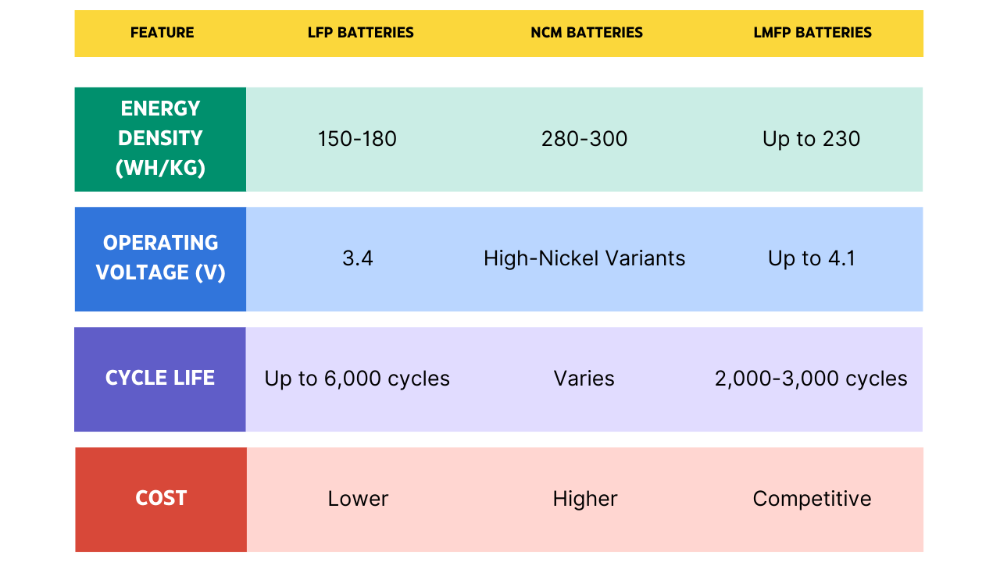
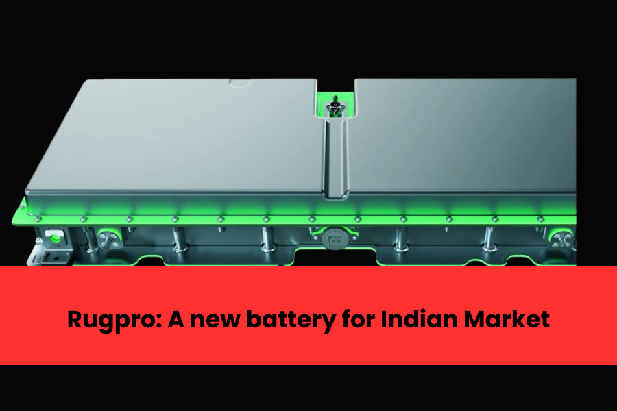
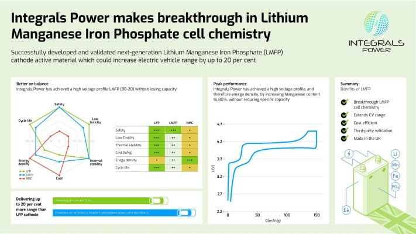

As the electric vehicle (EV) market continues to evolve, Lithium Manganese Iron Phosphate (LMFP) batteries are gaining significant attention for their innovative chemistry and impressive performance metrics. This newsletter explores the unique features of LMFP batteries, their advantages over traditional battery technologies, and their potential impact on the EV landscape.
What is LMFP?
LMFP batteries are a sophisticated evolution of Lithium Iron Phosphate (LFP) batteries, incorporating manganese into the cathode composition. This modification enhances several key performance indicators, making LMFP a compelling choice for modern electric vehicles.
What Sets LMFP Apart?
- Higher Energy Density: LMFP batteries can achieve a theoretical energy density of up to 230 Wh/kg, which is 15% to 20% higher than that of traditional LFP batteries.
- Improved Voltage and Performance: The addition of manganese allows LMFP batteries to operate at higher voltages (up to 4.1V), improving overall battery performance and enabling faster charging capabilities.
- Enhanced Low-Temperature Stability: LMFP batteries retain about 75% capacity at -20°C, outperforming LFP batteries in cold conditions.
Advantages Over Traditional Technologies
Comparison with LFP and NCM Batteries

- Cost Efficiency: Due to the abundance of manganese resources, LMFP batteries are projected to be only 5%-10% more expensive than LFP batteries while offering superior performance.
- Safety and Stability: The olivine structure of LMFP provides enhanced thermal stability during charge and discharge cycles compared to Nickel-Cobalt-Manganese (NCM) batteries, making them safer for widespread use in EVs.
- Sustainability: With lower material requirements per kilowatt-hour compared to other technologies, LMFP batteries present a more sustainable option for energy storage solutions.
Market Trends and Adoption
The demand for LMFP batteries is expected to surge, particularly in the mid-size EV segment. Recent forecasts suggest that shipments of LMFP cathode materials in China could grow from 2,000 tons in 2022 to 200,000 tons by 2025, indicating a robust market expansion.
Key Applications:
- Substituting LFP Batteries: Initially, LMFP is anticipated to replace LFP batteries in budget-friendly EVs while also being mixed with NMC (Nickel Manganese Cobalt) materials to enhance performance and safety.
- Middle-Class EVs: As technology matures, LMFP is expected to dominate the middle-class EV market, appealing to consumers seeking both affordability and performance.
Case Studies on LMFP Battery Technology
1. Ipower Batteries: Revolutionizing the Indian EV Market
Ipower Batteries has taken a significant step in the Indian EV sector by launching the country’s first LMFP battery packs, branded as Rugpro. These batteries have received certification under India’s FAME scheme, ensuring compliance with national safety and quality standards.

- Key Features:
- Increased voltage and capacity compared to traditional LFP batteries.
- Faster charging capabilities without compromising safety.
- Enhanced performance in varying temperature conditions.
The introduction of Rugpro batteries is expected to significantly impact the Indian EV market, offering a robust alternative to existing battery technologies and meeting the growing demand for efficient and reliable energy sources in electric vehicles.
2. Integrals Power: Breakthrough in LMFP Materials
Integrals Power has achieved a major breakthrough by developing LMFP cathode materials that combine affordability with high performance. Their proprietary technology allows for an 80% manganese content, significantly higher than typical materials while maintaining a specific capacity of 150 mAh/g.

- Performance Enhancements:
- Operating voltage of 4.1V, compared to LFP's 3.45V.
- Potential to increase EV range by up to 20% or reduce battery pack size without sacrificing performance.
This innovation addresses the challenge of increasing manganese content without losing energy density, positioning Integrals Power at the forefront of LMFP technology development. The company’s efforts are validated through third-party testing, confirming their materials can rival more expensive NCM technologies while being more sustainable.
3. Market Impact and Future Prospects
The global shift towards electric mobility is driving demand for LMFP batteries, particularly in mid-size vehicles where they can effectively replace LFP and compete with NCM chemistries. The expected growth in LMFP adoption is supported by:
- Government Incentives: Policies promoting clean energy are accelerating the transition to EVs.
- Technological Advancements: Continuous R&D efforts are focused on improving battery performance and reducing costs.
As manufacturers like Ipower Batteries and Integrals Power lead the charge, LMFP technology is poised to play a critical role in shaping the future of electric mobility globally.
Conclusion
LMFP batteries represent a promising frontier in battery technology, combining the best aspects of LFP with the enhancements provided by manganese. With their competitive energy density, cost-effectiveness, and safety features, these batteries are set to revolutionize the EV market. As research continues and production scales up, LMFP could very well become the preferred choice for manufacturers looking to meet the demands of an increasingly electrified world.